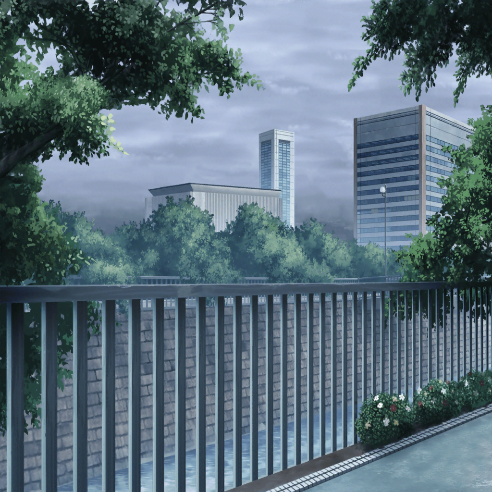

川沿いの道
こころ
ねぇ、香澄！ 見て見て！
ここにもカタツムリがいたわよ！
香澄
ホントだっ！
わぁ、このカタツムリ、殻に子供を乗せてるよ～！
かわいい～！
美咲
ちょ、ちょっと、雨の中、そんなに走り回ったら危ないって
美咲
ていうか、ちゃんと傘を差しなってば。
２人とも髪の毛、びしょびしょになってるし……
香澄
だって、こころんと美咲ちゃんと帰るなんて
めったにないじゃん！
思いっきり楽しまなきゃって思って！
こころ
そうよね！
あたしも香澄と一緒に帰れてうれしいわ！
ね、美咲？
美咲
あー、まあね。
けど今日、他のポピパの人達はどうしたの？
香澄
今日はみんな用事があって先に帰っちゃったんだ。
１人で寂しく帰るのかって思ってたけど、
こころんと美咲ちゃんがいてくれてホントに良かったな～♪
こころ
あ、香澄！ 見て！
とっても大きな水たまりがあるわよ！
こんな大きな水たまり、飛び越えられるかしら？
香澄
私もやってみよ～！
美咲
ちょっと、子供じゃないんだから！
わざわざ飛び越えなくても、よけて通ればいいでしょ？
こころ
そんなことしたら、せっかくの水たまりが
もったいないと思うわ
美咲
水たまりがもったいない、って
その発想、あたしにはないから
香澄
そうかな？
私はわかるけど……？
美咲
でしょうね。
戸山さんとこころは、似た者同士だし
美咲
ていうか、２人ともホントに元気だね……
あたしは、ここのところずっと雨が続いてるから、
気分までゲンナリしてきてるんだけど……
香澄
え？ なんでなんで？
雨の日は雨の日で楽しくない？
私は雨の日も好きだよ？
こころ
あたしも！
雨の日にも楽しいことはたくさんあるもの！
こころ
こうして水たまりをジャンプしたりするのも楽しいし、
雨の中を裸足で歩くのだって楽しいわ！
香澄
あー！ それ私も子供のころ、やったよ！
足の裏が道路にピタピタくっつく感じがして、
気持ちいいんだよね～！
こころ
あたし、久しぶりにやってみようかしら！
香澄
こころんがやるなら私もやろー！
美咲
やらなくていいって！
美咲
ていうか、百歩譲って水たまりをジャンプするのは
まだわかるけど、さすがに裸足はやめなって！ 危ないから！
こころ
美咲も一緒にやりましょう！
さあ、クツを脱いで！
美咲
やーりませーん
香澄
……ん？ なんだろ？
美咲
ん？ どしたの、急に。
なんかあった？
香澄
ん〜？ なんか遠くの方から聴こえてこない？
太鼓の音、みたいな感じ
美咲
太鼓の音？
……あ、
そう言われれば確かになんか聴こえてくるかも……
こころ
ホントだわ！ とっても楽しいリズムね！
身体が勝手に動き出しそう！
香澄
なんとなく商店街の方から聴こえてきてる感じするけど……
どっかでお祭りとかやってたっけ？
美咲
あ、そう言えば確か、週末に近くの神社で
お祭りがあるって商店街の人が言ってたかも。
それの練習とかしてるのかもね
こころ・香澄
お祭り！？
美咲
……う、うん
美咲
（あっちゃー……
よりによって、この２人の前で
お祭りとか言っちゃった……）
こころ
すごいわっ！ お祭りがあるのね！
あたし行ってみたいわ！
香澄
うん！ 私も私も！
美咲
（そ、そりゃ、やっぱりそうなるよねー……）
こころ
ねぇ、美咲！ 香澄！
これからお祭りに行ってみましょうよ！
美咲
こ、これから！？ じゃなくてお祭りは週末だって。
今日は練習だと思うし、行ったって何もないんじゃない？
こころ
そんなこと、行ってみないとわからないわ！
香澄
さんせー！ 行こう行こう！
お祭りだと金魚すくいとかあるかな？
私、金魚すくい大好きなんだ！
美咲
だからお祭りは週末なの！
こころ
金魚すくい？
それは何！？ あたし、はじめて聞いたわ！
金魚すくいって、どういうものなの！？
香澄
えっとね、水槽みたいなところに金魚がたくさんいるのね！
それを、こ～やって……すくうの！
こころ
とっても楽しそうね～！
早く神社に行ってみましょう！
香澄
うん！
神社は確かこっちだよね！
それじゃあ、行こ！
こころ
美咲もほら！ 一緒に行くわよ！
美咲
あ、わかったって！
行くから！ そんな引っ張んないで！